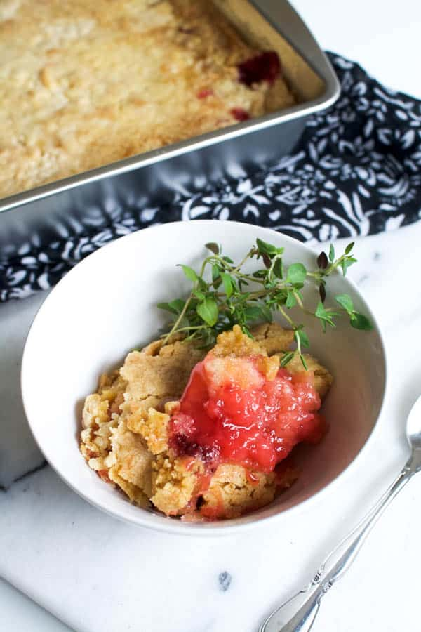

Ugo Eze's Recipes
DART 340
Welcome to my Recipe blog! On this site you can find some of my favorite recipes I like to make and think you would enjoy! Check them out at the navigation bar below.
Strawberry and Pineapple Dumpcake

INGREDIENTS & ESSENTIALS
- 3 cups of sliced strawberries
- 1 8oz. can crushed pineapple, undrained
- 1 box yellow cake mix
- 2 tbsp dry starwberry gelatin
- 1/2 cup chopped walnuts
- 1/3 cup melted butter
- Whipped cream (optional)
COOKING STEPS
- In a 9×9 inch square baking dish spread the crushed pineapple.
- Next layer the sliced strawberries over the pineapple.
- Sprinkle the dry gelatin on top of the strawberries & pineapple.
- Next scattter the dry cake mix evenly.
- Drizzle melted butter evenly over the top trying to wet all of the cake mix.
- Bake at 350 degrees for 15 minutes. Check on the cake to make sure there are no dry areas during baking. If there are some, drizzle a little additional melted butter. Bake an additional 10 to 15 minutes or until brown and bubbly.
- (Optional)Add some whipped cream to the top if you wish and sprinkle with additional walnuts.